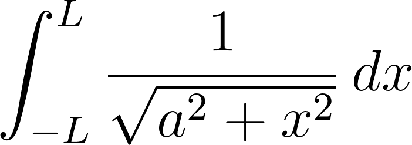

This is the sixteenth article in the Making Sense of C series.
In this article, we're going to write a basic word counter, our first goal in
programming in C.
I'll be going through the code in excruciating detail to make sure that at no
point anything feels uncovered, meaning this is going to be a long article.
We had to set up a lot of features in C to get to this point, but we're
finally here.
Up to this point, we've
// for single line comments and /*
and */ for multiline comments,
+-*/% for arithmetic,
[type] [variable] = [expression] which will allow us to store
values for later use,
char, short, int, and long long) and
the floating point types (float and double),
char type and invented the
NULL character, which indicates that we're ending a string,
char.
&),
*),
type * variable_name;,
type
array[num_elements];,
char array using double quotes,
("Hello!"),
variable_name[offset],
<, >, <=, >=, ==, !=),
&&, ||, and !),
if and else keywords so that our program can act differently
if given different inputs (a.k.a. conditional branches),
while and do while loops for unindexed looping,
for loops for indexed looping,
main function as the entry point for our program and a way to
take in user input,
#include macro and the concept of header files, which contain
function declarations and other stuff that we'll learn about later that allow us
to automate some of the process of addings things to the symbol table,
stdio.h, which will allow us to do file I/O,
FILE type, which will allow us to interact with files,
fopen, which will allow us to create a file object from a filename
and a mode,
const, which tells the compiler we will not modify
something and allows us to use certain things like string literals,
fclose, which will allow us to clean up a file object,
C programs,
stdin for user input, stdout for terminal output, and stderr
for error output,
fgets to get a line from a file,
printf to print to the terminal,
fprintf to write to files,
These tools are sufficient for us to write our first program: the word counter.
Our definition of a word is any sequence of alphanumeric characters, apostrophes, or dashes. For example, "ji12fsadkl" would be a word but "f1.asd%as1" would be three words because the period and the percent sign will break it apart. You could define a word to mean something else (like anything separated by spaces), but we're going to use this definition.
At certain points, I will discuss what our program needs to do and I would like you to consider how you would solve the problem by breaking each problem into smaller problems until you can use one of the tools we've introduced in this series. In fact, I would like you to record your ideas somewhere so you can compare them to the approaches I'll take, as it should be easier to tell which of your approaches will work and which won't.
This is a short step, but you'll want to create two new directories: one for
all the C tutorials in this series and one inside that one for the word
counter specifically.
First, if you're on Mac or Linux, open the terminal app.
If you're on Windows, open the Ubuntu app, which you should have installed in
the Compilers and Ides for
C article.
If you're on Mac or Linux, type in the command cd ~, which will put you in the
home folder (it's exactly like clicking on folders in the Windows or Mac
file explorer until you get to Users/[your username]).
If you're using the Windows Subsystem for Linux, type cd /mnt/c/Users/[your username], which
will bring you to your home directory (i.e. the directory that contains Desktop,
Documents, Downloads, etc.).
The /mnt/c/Users/[your username] directory is the Windows equivalent of ~ in Linux and Mac,
and you can replace every instance of ~ in the terminal with /mnt/c/Users/[your username]
and have it work.
Then, type mkdir -p dev/c-tutorial, which will then create a new directory in ~.
If you want to put your code in another
directory, you can use mkdir -p path/to/other/directory/c-tutorial.
You can see a list of all the directories in your current folder by typing ls.
From there, type cd c-tutorial to move into the c-tutorial directory.
If you put your code in another directory, you
can use cd path/to/other/directory/c-tutorial instead.
Lastly, create a new directory called word-counter using mkdir word-counter
and move into it with cd word-counter.
The entire process should look like this:
user@computer:~/some/random/dir$ cd ~ user@computer:~$ mkdir -p dev/c-tutorial user@computer:~$ ls c-tutorial Desktop Documents Downloads Music Pictures Public Videos user@computer:~$ cd dev/c-tutorial user@computer:~/dev/c-tutorial$ mkdir word-counter user@computer:~/dev/c-tutorial$ cd word-counter user@computer:~/dev/c-tutorial/word-counter$
Now that you're here, create a file called word-counter.c, which you can do
using your IDE, a text editor, or the command line.
If you're using an IDE or a text editor, go to File > Open
> Folder, navigate to the word-counter folder, and click on it.
Then, right click on the word-counter folder and click New File.
If you're using a command line text editor like vim or nano, then just type
vim word-counter.c or nano word-counter.c and the text editor should pop up
with a new file.
Although I personally use vim (I'm actually using it right now to write these
articles.) and would recommend it to an experienced programmer, I don't
recommend that any novices use it because it's made less for just putting text
on the screen like normal text editors (Google Docs, Microsoft Word, Notepad)
and more for coding.
It allows fast movement and operations throughout the code, but you have to put
in some effort.
The same reasoning also applies for emacs and nano.
Do not close the terminal, as we will use it later to compile and run our
code.
If you do close the terminal, you can just type cd
~/dev/c-tutorial/word-counter on Linux or Mac or cd
/mnt/c/Users/[your username]/dev/c-tutorial/word-counter.
From here, we can start typing our code into our new file.
We're going to start with our goal: counting the number of times a word shows up
in a file and printing that number to the terminal.
From there, we're going to go to the top level of our program, which will
correspond to our main function.
For us to count the number of times a word shows up in a file, we need to know the word and the file to read from. Then, we'll also need to store the count somewhere and print it out.
Our algorithm currently looks like
In this section, we're going to handle getting the user input, printing the
count of the word, getting the file into our program, and reading the file line
by line.
Besides printing the count of the word, these tasks will show up commonly and
you can normally knock them out quite quickly since little changes from project
to project, which makes it Boilerplate Code.
Printing the count of the word, however, is trivial since we just have to call
printf with a simple format string.
For now, let's focus on getting the user input.
We can look through our list of tools we have in C (look above) and we find
that the main function will allow us
to get user input directly through its arguments, so we can just use it
directly.
1 2 3 4 5 6 7 8 | int main(int argc, char ** argv) { char * program_name = argv[0]; char * file_name = argv[1]; char * word = argv[2]; // TODO: Count the number of times the word shows up in a file. // TODO: Print the count of the word. return 0; } |
Now you might notice a problem.
What happens if the user doesn't provide us with at least three arguments?
argv[0] always has to exist, but argv[1] and so on only exist if the user
provides other arguments on the command line.
We need to check that there are at least three arguments for the program to
continue running, so let's add that check.
Furthermore, if the user types the command in without the proper arguments, the
general response is to print out a usage message showing the user how to use it,
which we'll add too.
We want to print to stderr, so we'll need to use fprintf or fputs and
we'll need to include stdio.h.
1 2 3 4 5 6 7 8 9 10 11 12 13 14 | #include <stdio.h> int main(int argc, char ** argv) { if (3 > argc) { fprintf(stderr, "./word_counter file_name word_to_count\n"); return -1; } char * program_name = argv[0]; char * file_name = argv[1]; char * word = argv[2]; // TODO: Count the number of times the word shows up in a file. // TODO: Print the count of the word. return 0; } |
So now, we have the name of the file the user wants to run the program on in the
variable file_name and the word the user wants to find in word.
You might think it's a little weird that we skipped the part where we actually
count the word, but it's easy enough that we can do it in a few lines.
To print a number out to the screen, we can use printf and be done with it.
Since we need to declare a variable before we can use it, we're going to declare
unsigned int count = 0; before we calculate the count of the word.
1 2 3 4 5 6 7 8 9 10 11 12 13 14 15 | #include <stdio.h> int main(int argc, char ** argv) { if (3 > argc) { fprintf(stderr, "./word_counter file_name word_to_count\n"); return -1; } char * program_name = argv[0]; char * file_name = argv[1]; char * word = argv[2]; unsigned int count = 0; // TODO: Count the number of times the word shows up in a file. printf("%d\n", count); return 0; } |
Now we're going to get into some of the heavy lifting. Here's how I'm thinking we break down this part of the algorithm:
C program in some way that we can interact with it.
Let's work with this and see what happens.
CAs we went over in the article on files in
C, we can get files from our computer into our program using fopen,
which will return a FILE * object that we can use to interact with the file.
We'll want to read the file, so we're going to use "r" as the mode
(second argument to fopen).
Since we have to clean up after ourselves, we'll also need a corresponding
fclose.
1 2 3 4 5 6 7 8 9 10 11 12 13 14 15 16 17 18 19 | #include <stdio.h> int main(int argc, char ** argv) { if (3 > argc) { fprintf(stderr, "./word_counter file_name word_to_count\n"); return -1; } char * program_name = argv[0]; char * file_name = argv[1]; char * word = argv[2]; unsigned int count = 0; FILE * reader = fopen(file_name, "r"); // TODO: Read the file line by line // TODO: For each line, get the count of the word and add it to // the total count fclose(reader); printf("%d\n", count); return 0; } |
I decided to call the FILE * object reader since it's reading the file.
If I had done something stupid and called it something like a, then I could
end up accidentally confusing it for something else or not recognizing that I'm
using it incorrectly.
Now that we have a FILE *, we can read the file line by line.
We're going to need somewhere to store the line, and since the line is made up
of characters, we're going to use a char buffer.
We'll need to allocate a safe amount to get decently long lines, so let's
allocate room for 4096 (i.e. 212 or 4 KiB or about 4 kB)
characters.
If a user uses a line longer than 4096 characters, then fgets will
automatically break it into multiple lines every 4095 characters (remember
that the last character is the null terminator '\0').
We also want to keep reading until we reach the end of the file, which fgets
will allow us to do.
1 2 3 4 5 6 7 8 9 10 11 12 13 14 15 16 17 18 19 20 21 22 23 | #include <stdio.h> int main(int argc, char ** argv) { if (3 > argc) { fprintf(stderr, "./word_counter file_name word_to_count\n"); return -1; } char * program_name = argv[0]; char * file_name = argv[1]; char * word = argv[2]; unsigned int count = 0; FILE * reader = fopen(file_name, "r"); const int line_sz = 4096; // There are better ways to do this char line[line_sz]; // but we need features we haven't // gone over yet. while (fgets(line, line_sz, reader)) { // TODO: For each line, get the count of the word and add it to // the total count } fclose(reader); printf("%d\n", count); return 0; } |
Now, we need a function to count the number of times the word shows up in the
line.
We can then add it to the count.
For now, we're going to create a function called count_word_in_line that takes
in a line and the word we want to count and return the number of times the word
shows up in the line.
1 2 3 4 5 6 7 8 9 10 11 12 13 14 15 16 17 18 19 20 21 22 | #include <stdio.h> int main(int argc, char ** argv) { if (3 > argc) { fprintf(stderr, "./word_counter file_name word_to_count\n"); return -1; } char * program_name = argv[0]; char * file_name = argv[1]; char * word = argv[2]; unsigned int count = 0; FILE * reader = fopen(file_name, "r"); const int line_sz = 4096; // There are better ways to do this char line[line_sz]; // but we need features we haven't // gone over yet. while (fgets(line, line_sz, reader)) { count += count_word_in_line(line, word); } fclose(reader); printf("%d\n", count); return 0; } |
Now, we have to write count_word_in_line, but before we do that, we're going
to take care of a few string operations first.
count_word_in_lineSince count_word_in_line is going to be useful later in other programs, we
might as well put it in another file so we can reuse it.
Because we're going to put it in another file, we're going to have to also make
another header file.
I feel like we're going to need to do other string operations for our programs,
so we're going to create the files str-operations.h and str-operations.c.
You can make these files through the same process in which you created
the word-counter.c file.
Make sure to create these files in the same directory as word-counter.c.
For count_word_in_line, we're going to need the line, the word we want to
find, and we're going to return an int to get the proper count, which means
count_word_in_line has the syntax:
int count_word_in_line(const char * line, const char * word);
We add the consts because we'll modify neither the word nor the line.
Since we just need count_word_in_line, str-operations.h will look like
1 | int count_word_in_line(const char * line, const char * word);
|
Furthermore, we're going to want to #include "str-operations.h" in
word-counter.c so that we can use count_word_in_line in
word-counter.c.
1 2 3 4 5 6 7 8 9 10 11 12 13 14 15 16 17 18 19 20 21 22 23 | #include "str-operations.h" #include <stdio.h> int main(int argc, char ** argv) { if (3 > argc) { fprintf(stderr, "./word_counter file_name word_to_count\n"); return -1; } char * program_name = argv[0]; char * file_name = argv[1]; char * word = argv[2]; unsigned int count = 0; FILE * reader = fopen(file_name, "r"); const int line_sz = 4096; // There are better ways to do this char line[line_sz]; // but we need features we haven't // gone over yet. while (fgets(line, line_sz, reader)) { count += count_word_in_line(line, word); } fclose(reader); printf("%d\n", count); return 0; } |
Now, we're actually done with word-counter.c, so the rest of this article will
be working on str-operations.c and str-operations.h.
Before we continue with count_word_in_line, we're going to work on a few string
operations we need to implement: including check_if_strings_differ and to_upper.
check_if_strings_differWe have already written check_if_strings_differ, so we can just put it
into str-operations.c near the top.
1 2 3 4 5 6 7 | int check_if_strings_differ(const char * str1, const char * str2) { int i = 0; while (str1[i] && str2[i] && (str1[i] == str2[i])) { i += 1; } return str1[i] != str2[i]; } |
We also want to be able to convert things to the same case so that we match
"the" and "The", so we'll need to write a function for it.
Since we'll be converting from lowercase to uppercase, we'll call this function
to_upper.
Since we haven't covered dynamic memory allocation, we'll have to convert the
characters to uppercase in place, meaning we're going to modify the original
string and we won't need to return anything.
Our function declaration will look like
void to_upper(char * string);
We're going to want to go through all the characters in the string, so we're
going to need a while loop like so:
void to_upper(char * string) { int i = 0; while (string[i]) { // TODO: convert string[i] to uppercase if necessary i += 1; } }
The code above will loop through each character of the string until it reaches
the end of the string since '\0' is 0 and 0 is false in C.
We can access the current character by using string[i].
Lowercase ASCII characters are between 'a' and 'z' inclusive, so we just
need to check if the current character is greater than or equal to 'a' and
less than or equal to 'z'.
void to_upper(char * string) { int i = 0; while (string[i]) { if ('a' <= string[i] && 'z' >= string[i]) { // TODO: convert string[i] to uppercase } i += 1; } }
We'll want to subtact 32 from the character if it is a lowercase ASCII
character since the numerical value of a lowercase letter is 32 more than it's
corresponding uppercase letter.
We haven't covered bitwise operators, which would also work, but we're going to
continue with this method.
void to_upper(char * string) { int i = 0; while (string[i]) { if ('a' <= string[i] && 'z' >= string[i]) { string[i] -= 32; } i += 1; } }
Now, we just need to add it to str-operations.c.
Since it's declared in str-operations.h, we can just #include it and we
won't need to worry about where it is in the file.
1 2 3 4 5 6 7 8 9 10 11 12 13 14 15 16 17 18 19 | #include "str-operations.h" void to_upper(char * string) { int i = 0; while (string[i]) { if ('a' <= string[i] && 'z' >= string[i]) { string[i] -= 32; } i += 1; } } int check_if_strings_differ(const char * str1, const char * str2) { int i = 0; while (str1[i] && str2[i] && (str1[i] == str2[i])) { i += 1; } return str1[i] != str2[i]; } |
count_word_in_lineNow, we're going to come up with the algorithm to count the word in the line.
int that will serve as the count.
count.
We'll need to take care of the function input and output first, which we've done below.
1 2 3 4 5 6 7 8 9 10 11 12 13 14 15 16 17 18 19 20 21 22 23 24 25 26 27 28 29 30 31 32 33 34 | #include "str-operations.h" void to_upper(char * string) { int i = 0; while (string[i]) { if ('a' <= string[i] && 'z' >= string[i]) { string[i] -= 32; } i += 1; } } int check_if_strings_differ(const char * str1, const char * str2) { int i = 0; while (str1[i] && str2[i] && (str1[i] == str2[i])) { i += 1; } return str1[i] != str2[i]; } int count_word_in_line(const char * line, const char * word) { int count = 0; // TODO: Copy word into a local buffer so we can convert it to // uppercase // Convert the local copy of word to uppercase // Create a local buffer to store the current word // Set up something to keep track of where we are in the // current line // TODO: For each word in line: // 1. Convert the word to uppercase // 2. Check if the current word matches the input word // 3. Add one to the count if it matches the input word return count; } |
Since we're going to return the count and we're going to increment it every time we see the word, we need a variable to store the count.
Now, we already have functions to convert each word to uppercase, check if
they're the same word, and adding one to the count if it matches the input word
is trivial, so all we have to do is find the next word.
To make this easy on ourselves, we are going to sanitize our data, which
means removing characters we don't care about.
Since the scanf functions will find words divided by whitespace, we're going
to replace non-alphanumeric characters with spaces.
We're going to do a simple loop where we go through all the characters in the
line and make them into spaces if it's not an uppercase letter, lowercase
letter, or number.
We're going to create a new function called non_alphanumeric_to_spaces.
An experienced programmer would likely see what we're trying to do and think of
regular expressions because
replacing non-alphanumeric
characters with spaces is trivial using regular expressions.
In fact, we could replace a lot of the things we're doing in this tutorial with
professional code, including functions in the standard library such as toupper and strcmp.
Given that experts have written highly optimized code that will beat anything we'll cover in this tutorial, why are we reinventing wheels left and right if we're not even going to be using them in practice?
Put simply, you have to have something round and roll it on the ground before you can understand a wheel.
You might be expected to solve the integral  manually in a Calculus class,
but in any other class or on a job, you would look it up.
At this part of the tutorial, we're not concerned with writing industry-grade
code, we're just applying what we've already covered about C into making a
non-trivial program.
Furthermore, I want to show you how to work on a project when you don't have all the functions written for you, I don't want to teach anything new outside of what we've learned so far, and I want to demostrate what you can do with the tools that we have. Once we have a thorough understanding of these topics, we'll start using the industry standards.
non_alphanumeric_to_spaces will be almost identical to to_upper but with a longer condition in
the if statement and the conversion from lower to upper being replaced.
Since the condition in the if statement is going to be longer, I'm going to
calculate it outside of the parentheses for the if statement.
1 2 3 4 5 6 7 8 9 10 11 12 13 14 15 16 17 18 19 20 21 22 23 24 25 26 27 28 29 30 31 32 33 34 35 36 37 38 39 40 41 42 43 44 45 46 47 48 49 50 51 52 53 54 | #include "str-operations.h" void to_upper(char * string) { int i = 0; while (string[i]) { if ('a' <= string[i] && 'z' >= string[i]) { string[i] -= 32; } i += 1; } } void non_alphanumeric_to_spaces(char * string) { int i = 0; while (string[i]) { // calculating the condition outside the if statement int alphanumeric = // checking if it's a lowercase letter ('a' <= string[i] && 'z' >= string[i]) || // checking if it's an uppercase letter ('A' <= string[i] && 'Z' >= string[i]) || // checking if it's a digit ('0' <= string[i] && '9' >= string[i]) || ('\'' == string[i]) || ('-' == string[i]); if (!alphanumeric) { string[i] = ' '; } i += 1; } } int check_if_strings_differ(const char * str1, const char * str2) { int i = 0; while (str1[i] && str2[i] && (str1[i] == str2[i])) { i += 1; } return str1[i] != str2[i]; } int count_word_in_line(const char * line, const char * word) { int count = 0; // TODO: Copy word into a local buffer so we can convert it to // uppercase // Convert the local copy of word to uppercase // Create a local buffer to store the current word // Set up something to keep track of where we are in the // current line // TODO: For each word in line: // 1. Convert the word to uppercase // 2. Check if the current word matches the input word // 3. Add one to the count if it matches the input word return count; } |
You can read everything except the generic while loop stuff (anything involving
while or i) in non_alphanumeric_to_spaces as "if the current character is neither a lowercase
letter nor an uppercase letter nor a digit nor an apostrophe nor a dash, then
set it to a space".
Now that we have everything set up, we can finish count_word_in_line.
count_word_in_lineFirst, we have to create two local buffers: one for the current word and one for
the word we're looking for.
Then, we need to convert the word we're looking for to uppercase.
Since the file is getting kind of big, we're going to just focus on
count_word_in_line.
We're also going to introduce a new function called strncpy, which
copies up to n characters of a string.
To do so, we'll have to include the header
char * strncpy(char * destination, const char * source, size_t num);
where destination is what you're copying to, source is where you're copying
from, and num is the maximum number of characters you can copy.
The char * it returns is just destination.
Don't worry about the size_t, as it's
just an alias for one of the unsigned integral types in C and C++.
It's used mainly in the standard library to represent sizes and counts, and
we'll be able to provide a positive integer argument without any problem.
int count_word_in_line(const char * line, const char * word) { int count = 0; const int buff_sz = 1024; char word_to_count[buff_sz]; char current_word[buff_sz]; strncpy(word_to_count, word, buff_sz - 1); word_to_count[buff_sz - 1] = '\0'; to_upper(current_word); // TODO: Set up something to keep track of where we are in the // current line // TODO: For each word in line: // 1. Convert the word to uppercase // 2. Check if the current word matches the input word // 3. Add one to the count if it matches the input word return count; }
We subtracted 1 from buff_sz and set the last character to '\0' to make
sure word_to_count always remains a valid C string.
sscanfNow, generally you shouldn't use any of the scanf family of functions because
if your input is even slightly different from what you're expecting then it just
won't work.
In fact, the only time you should use any scanf function is if you know that
the input will be in a simple format that scanf can parse, such as a bunch of
words separated by whitespace.
Since we have a bunch of words separated by whitespace, we're going to use
sscanf (the scanf function to parse strings) to get the next word.
sscanf has the
syntax
int sscanf(const char * s, const char * format, ...);
where it reads from the string s according to the format specified by format
and all arguments after format are set in the order in which they appear in
the argument list using the format specifer to
determine how to set the argument.
For example
char str1[32]; char str2[32]; int num; sscanf("Hello World 7", "%s %s %d", str1, str2, &num);
will set str1 to "Hello", str2 to "World", and num to 7.
We had to provide the address of num to sscanf because it would otherwise
create a copy of num and modify the copy.
By providing the memory address instead, we can modify the variable directly.
sscanf also returns an int which indicates the number of arguments filled
with text from the string.
In our example, sscanf would return 3 since we filled str1, str2 and
num using text from the string.
Now, we can and should specify the width of each %s to prevent buffer
overflows, so we should have written
sscanf("Hello World 7", "%31s %31s %d", str1, str2, &num);
because we can copy at most 31 characters into str1 and str2 safely since
we have room for 32 characters and the last one needs to be '\0', so we only
have room for 31 characters.
In our case, we have room for 1024 characters reserved for current_word, so
we'll need to use "%1023s" to get the next word.
We'll need to look for our next word starting at the end of the last
word, so we'll need to know how many characters we read.
We can use the %n format specifier to get the number of characters sscanf
has read after calling it, leaving us with a format string of "%1023s%n".
We'll need somewhere to store the number of characters we've read, so we'll
create a variable called num_characters_read.
We need a variable to store our current position in the line, which we'll call
cur_pos, and we'll initialize it with line.
Inside our loop, we'll add num_characters_read to cur_pos so that sscanf
can start reading from cur_pos instead of the beginning of the string.
Lastly, we'll need to keep looping as long as all our arguments have been
filled.
I don't use any of the scanf functions frequently enough to have known this
off the top of my head, but you only count the number of arguments filled using
characters in the text, meaning we should expect a return value of 1 since
%n isn't filled with characters from the text.
int count_word_in_line(const char * line, const char * word) { int count = 0; const int buff_sz = 1024; char word_to_count[buff_sz]; char current_word[buff_sz]; strncpy(word_to_count, word, buff_sz - 1); word_to_count[buff_sz - 1] = '\0'; to_upper(word_to_count); const char * cur_pos = line; int num_characters_read = 0; while (sscanf(cur_pos, "%1023s%n", current_word, &num_characters_read) == 1) { cur_pos += num_characters_read; // TODO: 1. Convert the word to uppercase // 2. Check if the current word matches the input word // 3. Add one to the count if it matches the input word } return count; }
We have four lines of code left, and one of them is just a closing curly brace.
First, we convert current_word to uppercase, which we can do using to_upper.
Then, we check if current_word and word_to_count match, which we can do
using an if statement whose condition is
!check_if_strings_differ(word_to_count, current_word).
Lastly, we just have to put count += 1; inside the if statement, leaving us
with
1 2 3 4 5 6 7 8 9 10 11 12 13 14 15 16 17 18 19 20 21 22 23 24 25 26 27 28 29 30 31 32 33 34 35 36 37 38 39 40 41 42 43 44 45 46 47 48 49 50 51 52 53 54 55 56 57 | #include "str-operations.h" #include <stdio.h> #include <string.h> void to_upper(char * string) { int i = 0; while (string[i]) { if ('a' <= string[i] && 'z' >= string[i]) { string[i] -= 32; } i += 1; } } void non_alphanumeric_to_spaces(char * string) { int i = 0; while (string[i]) { int alphanumeric = ('a' <= string[i] && 'z' >= string[i]) || ('A' <= string[i] && 'Z' >= string[i]) || ('0' <= string[i] && '9' >= string[i]) || ('\'' == string[i]) || ('-' == string[i]); if (!alphanumeric) { string[i] = ' '; } i += 1; } } int check_if_strings_differ(const char * str1, const char * str2) { int i = 0; while (str1[i] && str2[i] && (str1[i] == str2[i])) { i += 1; } return str1[i] != str2[i]; } int count_word_in_line(const char * line, const char * word) { int count = 0; const int buff_sz = 1024; char word_to_count[buff_sz]; char current_word[buff_sz]; strncpy(word_to_count, word, buff_sz - 1); word_to_count[buff_sz - 1] = '\0'; to_upper(word_to_count); const char * cur_pos = line; int num_characters_read = 0; while (sscanf(cur_pos, "%1023s%n", current_word, &num_characters_read) == 1) { cur_pos += num_characters_read; to_upper(current_word); if (!check_if_strings_differ(word_to_count, current_word)) { count += 1; } } return count; } |
And we're done.
For your convenience, here is word-counter.c:
1 2 3 4 5 6 7 8 9 10 11 12 13 14 15 16 17 18 19 20 21 22 23 | #include "str-operations.h" #include <stdio.h> int main(int argc, char ** argv) { if (3 > argc) { fprintf(stderr, "./word_counter file_name word_to_count\n"); return -1; } char * program_name = argv[0]; char * file_name = argv[1]; char * word = argv[2]; unsigned int count = 0; FILE * reader = fopen(file_name, "r"); const int line_sz = 4096; // There are better ways to do this char line[line_sz]; // but we need features we haven't // gone over yet. while (fgets(line, line_sz, reader)) { count += count_word_in_line(line, word); } fclose(reader); printf("%d\n", count); return 0; } |
and str-operations.h:
1 | int count_word_in_line(const char * line, const char * word); |
Assuming you followed all the steps up to this point, you should have all the
source code in the proper directory.
Remember that if you're using the Windows Subsystem for Linux (the Ubuntu app)
that instead of ~, you should see /mnt/c/Users/[your username].
If you go to the terminal and type ls, you should see:
user@computer:~/dev/c-tutorial/word-counter$ ls str-operations.c str-operations.h word-counter.c
If you see these three files, then you can compile them into a program using
gcc:
user@computer:~/dev/c-tutorial/word-counter$ gcc str-operations.c word-counter.c -o word-counter
You can then run the program using ./word-counter [file-to-read]
[word-to-count].
You can create your own test file or you can use this sample text from this article.
user@computer:~/dev/c-tutorial/word-counter$ mv ~/Downloads/test-file.txt . user@computer:~/dev/c-tutorial/word-counter$ ls str-operations.c str-operations.h test-file.txt word-counter word-counter.c
The mv command is what you would get by opening up your file manager GUI,
moving to ~/Downloads (or /mnt/c/Users/[your username]/Downloads on Windows), right-clicking
on ~/Downloads/test-file.txt in your file manager GUI, selecting Cut,
moving to ~/dev/c-tutorial/word-counter (or /mnt/c/Users/[your username]/dev/c-tutorial/word-counter on Windows), then
right-clicking and hitting Paste.
Anyway, now that we're here, we can run some tests.
If you're using test-file.txt, then these are the results you should get:
user@computer:~/dev/c-tutorial/word-counter$ ./word-counter ./word_counter file_name word_to_find user@computer:~/dev/c-tutorial/word-counter$ ./word-counter test-file.txt the 20 user@computer:~/dev/c-tutorial/word-counter$ ./word-counter test-file.txt THE 20 user@computer:~/dev/c-tutorial/word-counter$ ./word-counter test-file.txt watermelon 0
The first test was with no input to make sure it printed out a usage message,
the second test was with some input with a known value since the word "the"
shows up twenty times in test-file.txt, the third test was to make sure that
searching was case insensitive, and the last test was to make sure that words
that do not show up in test-file.txt return a result of zero.
In this article, we wrote and compiled a complete, functioning, nontrivial program from scratch using the tools we've introduced.
In the next article, Printing Lines Containing a Specific Wordwe're going to start discussing the next program, which will print out every line from a file that contains a word the user specifies. In doing so, we're going to need to set up a few new concepts, most specifically dynamic memory allocation, build systems, and compiler flags to deal with multiple programs reusing the same source files. My plan is to write the code for the next program, then come up with the build system, as the build system just automates the commands we're going to write.